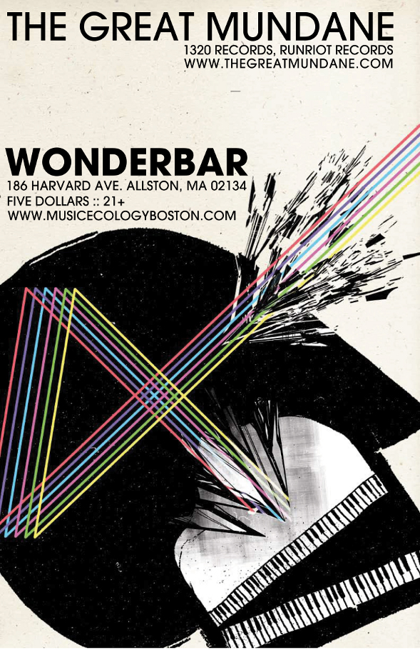

Jan. 4, 2011, 10 p.m. at Wonder Bar
(Comments)
Add to Google Calendar Add to Outlook/iCal

Music Ecology presents: The Great Mundane with Dash EXP and Adam Ridge
The Great Mundane - Portland
Video game deprived and pop culturally challenged, The Great Mundane grew up in a southeastern Michigan home where TV was made of cardboard boxes, the tree in the backyard was his best friend and the words "I am bored" were household blasphemy. Aside from occasional piano lessons, he passed time deep in his own imagination and on
...spontaneous road trips, a.k.a his mother’s famous mystery van rides, that seem to have provoked his current state of restlessness.
Itching to hit the road, The Great Mundane left his hip-hop roots in Michigan to delve into Chicago’s house/techno scene before arriving in the Pacific Northwest. Now based in Portland, Oregon he takes listeners on a journey exploring the complexities and intricacies of his minimalist and innovative approach to beatmaking. He invents fractured, heady instrumentals laced with lush synthesizer work that navigate the terrain of forward thinking hip-hop and electro/house, all while exhibiting genuine emotion and talented production skills. Each arrangement is collaged with friends, found sounds, synthesizers, and samples meticulously programmed to convey what it might feel like to fall in love with a tree, travel through a wormhole, or to never be bored again.
His sound draws on influences from Dabrye, Prefuse 73, Nosaj Thing, James Blake, J Dilla and many other like-minded composers. His debut LP "When Falls Arrive" (psymbolic) was released in 2007 exposing him as one of the top underground electronic musicians to keep an ear out for. Since, he has released "The Wires Remixes" EP, a remix of Deru's "Peanut Butter and Patience" (Mush) and his second full length entitled "Humdrum" (RunRiotRecords). The Great Mundane’s music is featured on a long list of
compilation albums including Portland’s annual "PDX Pop Now" series. Expect remixes for SPL, Lorn, KiloWatts & Bluetech as well as a forthcoming EP entitled “This is So You” due in October 2010 on 1320 Records in anticipation for his next full length in May 2011 on the same label.
http://soundcloud.com/the-great-mundane
http://www.facebook.com/pages/The-Great-Mundane/11828203178
http://www.thegreatmundane.com/
Dash EXP (Shift Recordings/BrapDem!/Hot N Heavy/Stupid Fly) - Seattle
Dash EXP is an artist of connections for over a decade, in electronic dance music (EDM) including: all things BASS. As a DJ and producer, some of his main influences charged to the musique concréte movement of the 1940s and 50's, lead by Shaeffer and Stockhausen, Nine Inch Nails, early Roni Size, American Grunge and cutting edge experimental media artists like Gary Hill, Vito Acconci and Jack Smith.
While studying Expanded Media and Fine Arts at Alfred University in NY, he began hosting a radio show, “Beats, Dimes & Life” on WALF 89.7 FM. It was there that Dash defined himself as a cut above the rest by being the first DJ in the station's history to mix live on air. To this day he continuously makes regular appearances on local and international FM and internet broadcasts. It was also there that he delved into noise, ambience and rhythmic soundscape experiments (hence the EXP)-- his first take on what would evolve into structured music in the years to come. Refusing to slow down, Dash established the “Kum Curek Productions” crew, and began to host parties to expose western New York to the underground Jungle/D&B sound.
Since 2005, Dash EXP has resided in Seattle, USA, as a BASS marauder. Unsatisfied with the exposure northwest ravers had to jungle music, he founded the Seattle chapter of Konkrete Jungle, American stateside's original jungle/drum & bass dance party. In 2006 Dash was introduced to DUBSTEP by veteran DJ, Struggle, and shortly thereafter, made it his duty to redirect his knowledge of experimental sounds, to create low end infused rhythms. The year 2007 saw the completion of 'Chronicitis,' Dash EXP's first dubstep tune, which was immediately picked up by a local start up Seattle Record label, but soon fell under.
With the 2008 release of "Dried UP," a track written solely in cheap headphones at his dayjob where he oversaw a local computer lab, Dash EXP became a household name. 'Dried UP' was then remixed by Joint Forces (a crew from down under) and became a highly sought after club anthem, and was showcased on a plethora of mixes, podcasts and radio shows--worldwide. Since then, Dash has remixed dozens of artists, and he has had a chunk of releases on several dubstep labels including Seattle's infamous SHIFT recordings. Ongoing production projects include remixes for underground hip hop acts and internationally acclaimed dubstep producers, and a return to his firstborn love; D&B. In 2010, keep your ears wide for various collaborations with vocalists and traditional musicians and be on the look out for his debut solo EP's King of Rock, due out in early 2011, on Brap Dem! Records. And the Soundview EP, a dive into his roots as he explores tropical, funky kuduro vibes. He has also completed his first D&B EP's 'Love & Sex & Music' and 'Chmapion Rock,' forthcoming this winter.
With his keen sense for detail and precision during mixes, and heavy lowwend, dancers can expect sets to stir up aurithmic bounty on the dancefloor. With that said, rest assured, Dash will come correct and set the mood for the dance, as he's warmed up for heavy hitters like Micky Finn, Headhunter, R.A.W., Reid Speed, Rusko, Dara, DJ ODI, Armin Van Buren, Empress and Darude to name a few. Come prepared for an arsenal of fresh material complimented by your favorite classic basslines, as he receives support from some of the world's leading producers and record labels around the world.
http://www.soundcloud.com/dashexp
http://www.facebook.com/DashEXP
http://www.dashexp.com/
Adam Ridge - Boston
Dirty-dubbed disco crossed with intelligent krunk. All hardware set. There isn't much to say just come and listen.
http://soundcloud.com/dubioussound
http://www.facebook.com/pages/adam-Ridge/104602892924443
http://www.blueboyproductions.net/010910adamridgeclub7.mp3
Visuals by our resident VJ Shmeejay
10 PM, $5, 21+
For this and future events please visit
http://www.musicecologyboston.com/
or find us on Facebook at
http://www.facebook.com/MusicEcology
Promotional assistance provided by:
Lostin Sound
http://www.lostinsound.org/
and Forbidden Bass Crew
http://www.facebook.com/group.php?gid=365770374790
Wonder Bar
186 Harvard Avenue
Allston, MA
02134-2806
Get Directions
Archive
2014
2013
- December (1)
- November (4)
- October (2)
- September (5)
- August (2)
- July (4)
- June (4)
- May (3)
- April (5)
- March (5)
- February (6)
- January (4)
2012
- December (6)
- November (6)
- October (6)
- September (4)
- August (5)
- July (6)
- June (5)
- May (6)
- April (5)
- March (5)
- February (5)
- January (6)
2011
- December (5)
- November (5)
- October (4)
- September (5)
- August (3)
- July (2)
- June (4)
- May (5)
- April (4)
- March (6)
- February (5)
- January (4)
2010
- December (5)
- November (5)
- October (5)
- September (4)
- August (2)
- July (4)
- June (6)
- May (5)
- April (4)
- March (5)
- February (5)
- January (1)
Locations
- Brighton Music Hall (1)
- Good Life (1)
- Machine Nightclub (13)
- Middle East Corner (1)
- Middle East Upstairs (4)
- Phoenix Landing (1)
- Royale Boston (2)
- South Shore Music Hall (1)
- T.T. the Bear's Place (1)
- The Sinclair (1)
- The Stone Church (1)
- Wonder Bar (190)
- Wonder Bar - DOWNSTAIRS (2)
Feeds
RSS / AtomSubscribe to our Newsletter
Connect
Comments